1. Web技術
1-1. Webの誕生
- 【Webシステムの起源】
-
1989年、欧州原子核研究機構 (CERN) のティム・バーナーズ＝リーは、研究状況の確認、論文の資料検索など、数千人にのぼる研究者に必要な情報を効率よく行き渡らせる環境を構築するためのシステム「WWW（World Wide Web）」を考案した。
1990年、WWWをより具体化した提案書を発表。HTTP、URL、HTMLなど基幹となる仕組みや、ブラウザー、サーバーなどのツールも構築し、人類初のウェブページが公開された。
1994年には、WWWで使用される各種技術の標準化を推進する為の非営利団体「W3C」が設立された。ティム・バーナーズ＝リーが創設し、率いている。
- 【ハイパーテキスト】
-
「WWW」には複数のドキュメントを相互に関連付ける「ハイパーテキスト」の概念が取り入れられた。ドキュメントの参照先であるURLを埋め込んだ「ハイパーリンク」によって、インターネット上に散らばったドキュメントを相互に結びつけ、リンクをたどって次々と文書を表示できるようになった。
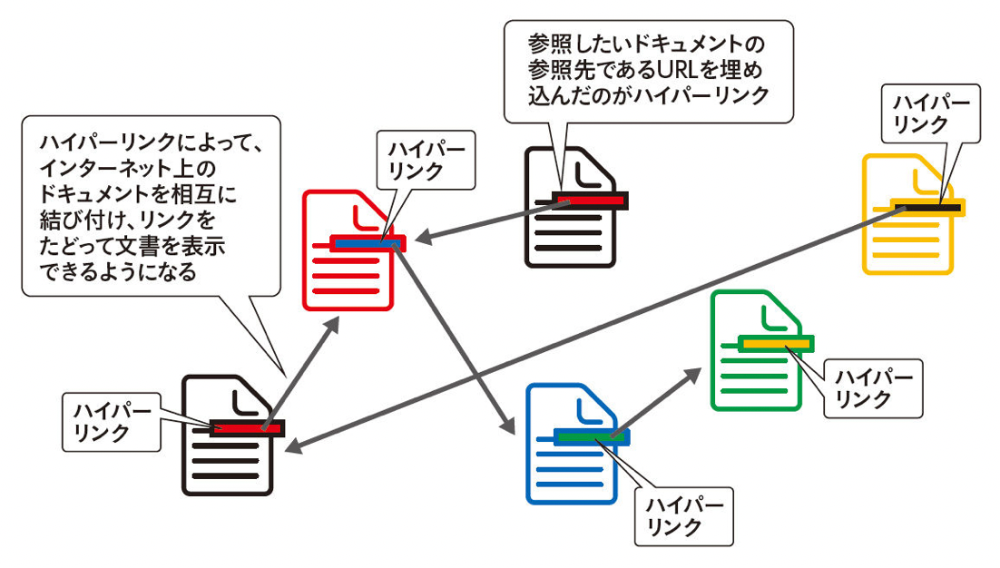
- 【Webページが表示されるしくみ】
-
インターネットに接続したPCやスマートフォンでブラウザーを起動しWebサイトのアドレスを指定すると、以下のようなプロセスが実行される。
- Webサーバーにリクエストが送信される。
- リクエストを受信したWebサーバーがリクエストに応じて、HTML、CSS、画像などのコンテンツを読み出す。
- Webサーバーで処理されたコンテンツがブラウザーに返される。
- ブラウザーで受信したコンテンツを解析して画面に表示する。
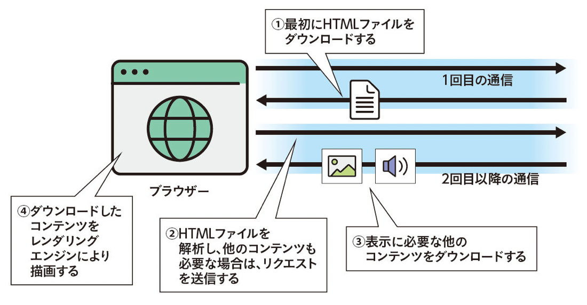
- 【ブラウザーの役割】
-
サーバーから受け取ったデータを元にブラウザーの画面に表示することを「レンダリング」と呼び、それを行うブラウザー内のシステムを「レンダリングエンジン」と呼ぶ。
主なブラウザーが使用しているレンダリングエンジンは以下の通り。
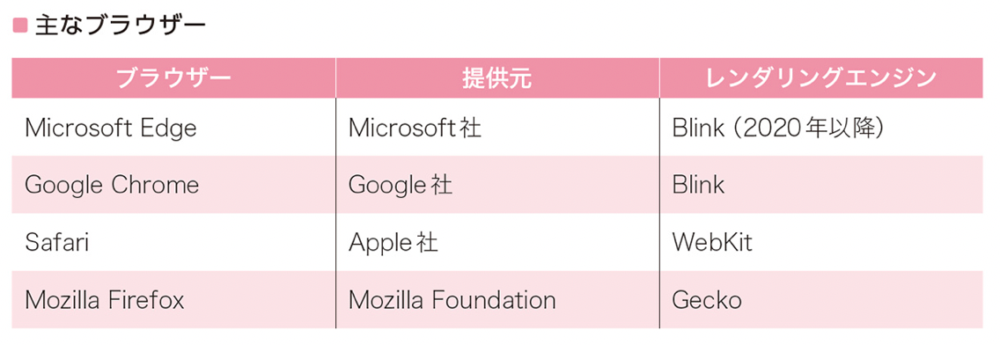
1-2. プロトコル
- 【プロトコルとは】
-
ネットワーク通信において、送られる側と受け取る側で事前に取り決められたルールや手順、規格のことを「プロトコル」。具体的な用途やソフトウェア、サービスなどの種類に応じて個別に制定されたプロトコルを、特に「アプリケーションプロトコル」と呼ぶ。
- 【HTTPとは】
-
Webシステムでは、アプリケーションプロトコルに「HTTP（Hypertexrt Transfer Protocol）」を使用する。処理やリソースをリクエストするWebクライアント（ブラウザー）と、要求に対してレスポンス（応答）を返すWebサーバー間の通信に利用される。
Webクライアント（ブラウザー）からWebサーバーに対して行われる要求を「HTTPリクエスト」呼び、リクエストを受け取ったサーバーは、応答としてHTTPレスポンスを返す。

1-3. その他のプロトコル
- 【FTPとは】
-
「FTP（File Transfer Protocol）」は、ファイルを転送するための通信規格である。
Webサイトを公開する際には、画像やテキストなどの「ファイル」をFTPでサーバに転送する必要があり、ファイル転送はFTPソフトを活用し、FTPサーバに接続することで実現する。
- 【SMTPとは】
-
「SMTP（Simple Mail Transfer Protocol）」は、メールソフトからメールサーバー、さらに相手のメールサーバーへと、メールを転送するためのプロトコル。メールアドレスを使って、受け取ったメールを指定された宛先へ送り届ける。
1-4. HTTPのセキュリティ
- 【HTTPの問題点】
-
HTTPはシンプルなアプリケーションプロトコルである反面、セキュリティに関して以下のようなデメリットがある。
- 通信が暗号化されていないため、盗聴を防ぐことができない。
- サーバーのなりすましを防ぐことができない。
- Webページや通信内容の改ざんを防ぐことができない。
- 【セキュアなHTTPS】
-
HTTPのセキュリティ面での不安を解消し、よりセキュア（安全）なWebアクセスを行うためのプロトコルが「HTTPS（HyperText Transfor Protocol Secure）」である。
「SSL（Secure Sockets Layer）」などのセキュアなプロトコルによって送受信データを「暗号化」し、ネットワーク経路上の盗聴を防ぐことができる。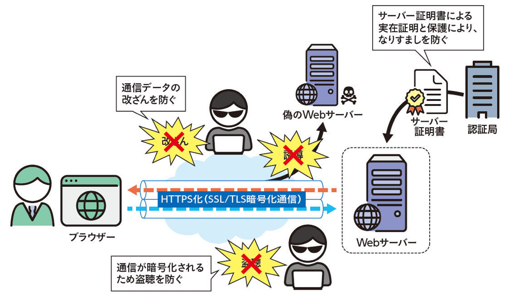
2021年現在、PCやスマートフォンで使用する主なブラウザーは、ほぼすべてHTTPSに対応しており、「https://」で始まるURLを指定することで、暗号化通信を開始する。
- 【リダイレクト】
-
最近では、HTTPよりHTTPSを使うことが一般的になっており、Webサーバーによっては、HTTPでリクエストがあった場合もプロトコルを自動的にHTTPSに切り替え、ブラウザーに対してHTTPSリクエストを再送するように要求する。これを「リダイレクト」と呼ぶ。
1-5. URL
- 【URLとは】
-
通常、ブラウザーのアドレスバーに文字列を入力してWebページにアクセスする。この文字列を「URL（Uniform Resouce Locator）」と呼ぶ。
URLはどのような手順（プロトコル）で、どこのWebサーバーにある、どのようなコンテンツにアクセスするかを示し、その内容によってリクエストを送信する。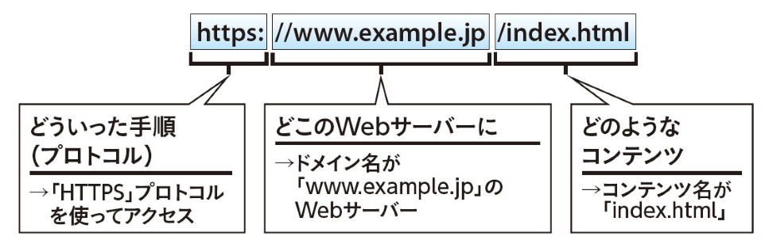
- 【絶対パス】
-
情報のありかを示す場合には、「パス（Path）」を使用する。パスは情報にたどり着くための経路を表す。
「/（ルート）」と呼ばれる階層構造の根本から目的までの経路を表すパスを絶対パスと呼ぶ。
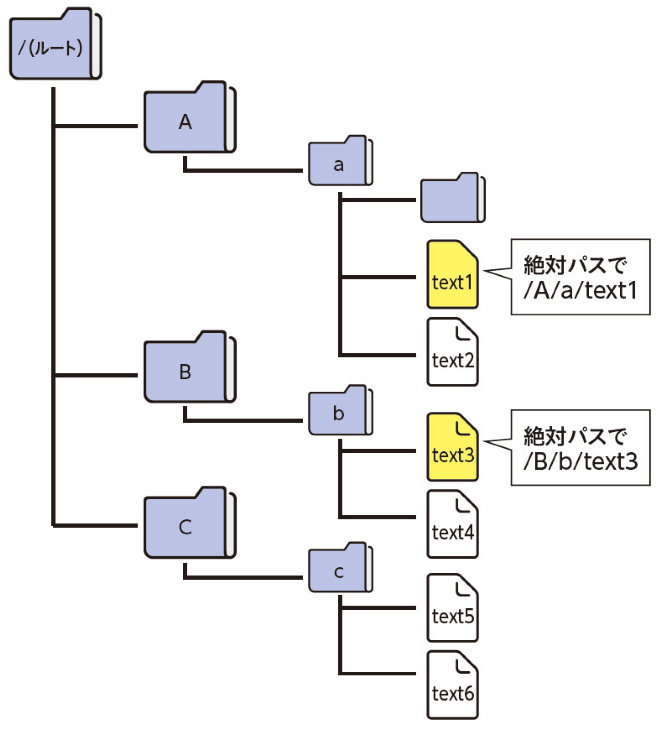
たとえばファイルが保存されている場所を絶対パスを使って表す場合は、「/」→「Aフォルダ」→「bフォルダ」→「text1ファイル」のように、常に「/」から始まるのが特徴。絶対パスは「フルパス」とも呼ばれる。
- 【絶対URL】
-
URLのパス部分に絶対パスを含んだものを「絶対URL」と呼ぶ。
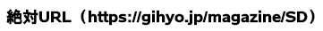
- 【相対パス】
-
ユーザーが現在作業しているフォルダー（またはディレクトリ）から目的までの経路を表すパスを「相対パス」と呼ぶ。
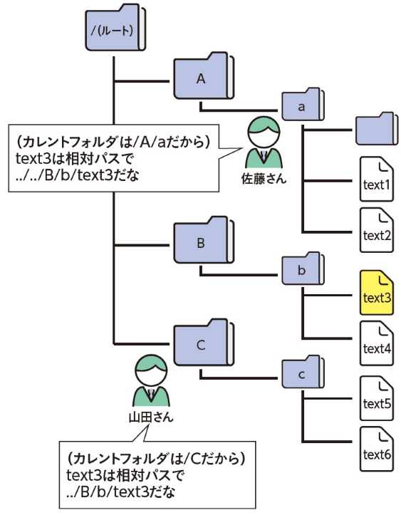
ユーザーが現在作業しているフォルダーを「カレントフォルダー（または、カレントディレクトリ）」と呼び、「.（ドット）」で表す。
ブラウザーのアドレスバーに直接URLを入力する場合は相対パスは使用しないが、Webページを作成する際に「<img src="../images/foo.jpg">」のような相対パスを使って画像を埋め込む場合が多い。
- 【パーセントエンコーディング】
-
「パーセント（%）エンコーディング」は、URLのパス部分で使用できない文字を扱えるようにするためのエスケープ処理。一般的には「URLエンコード」とも呼ばれる。
たとえば、半角スペースをパスやクエリに含めるには。パーセントエンコーディングした「%20」に置き換える。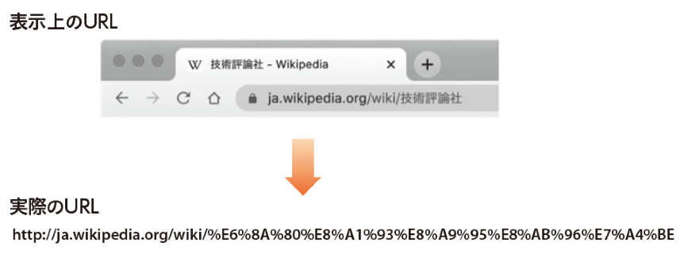
- 【URLによるSEO対策】
-
検索サイトの上位にランキングされる対策を「SEO（Search Engine Optimization、検索エンジン最適化）」と呼ぶ。
URLで行うことができるSEO対策には以下のようなものがある。- Webサイトの内容に関連する単語を含むURLにする。
- 長すぎるURLにしない。
- 一般的なファイル名は使用しない。（page1.htmlなど）
- ディレクトリ構造を複雑にしない。
1-6. その他の知識
- 【クッキー（HTTP Cookie）】
-
「クッキー（HTTP Cookie）」は、WebサーバーからWebブラウザーに送信される極めて小さなデータ。Webブラウザーではクッキーを保存しておき、再度同じWebサーバーにリクエストを送信する際に、保存しておいたクッキーを一緒に送信する。
このようなしくみによって、会員制サイトのログイン状態を維持したり、ショッピングカートに入れた商品が会計時まで保存できたりする。その他にも、ユーザーのアクセス履歴を取得してユーザー行動の分析するといった用途にも使用されるため、プライバシー保護の一環でクッキーの利用を制限している地域や国も存在する。
- 【CDN】
-
「CDN（Content Delivery Network）」とは、世界中のネットワークにWebサーバーを分散配置して、どこからアクセスしてもWebコンテンツを効率的かつ迅速に配信できるようにしたネットワークである。
CDNを使うことで、クライアントに近い場所にWebサーバーを配置でき、物理的な距離を縮めることができる。またWebアクセスが1ヵ所に集中するのを防ぐことができるため、負荷分散にも貢献する。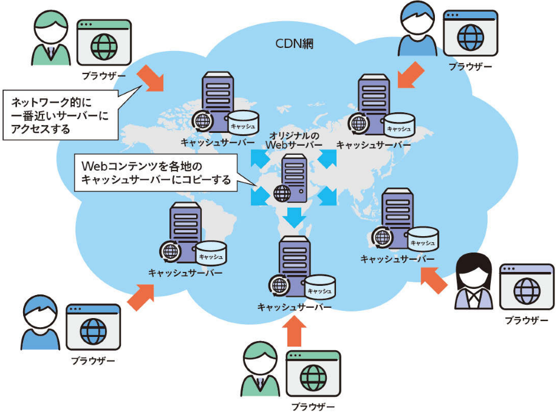
- 【クラウドサービス】
-
ここ数年で「クラウドサービス」の利用が急速に増えている。「クラウド」と呼ばれるインターネット上のサービスを利用して、Webサーバーを簡単に立ち上げるのがWebシステム構築の主流になりつつある。
クラウドサービスには以下のような様々な形態がある。
- ハードウェアリソースやインフラを提供する形態の「IaaS（Infrastructure as a Service）」
- アプリケーションのためのプラットフォームを提供する「PaaS（Platform as a Service）」
- サービスやアプリケーションを提供する形態の「SaaS（Software as a Service）」
開発や運用の自由度は「IaaS > PaaS > SaaS」の順となる。ただし自由度が高い分、開発にかかるコストも大きくなる。
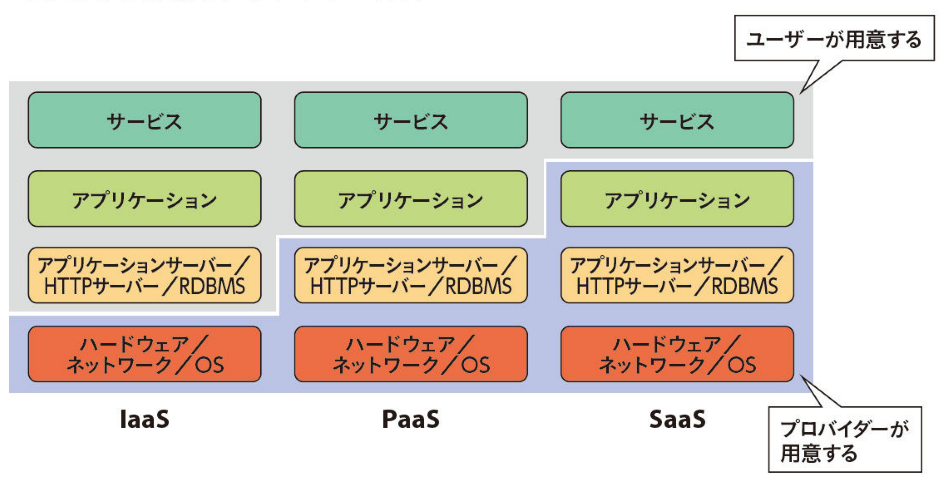